Région Île-de-France
Le cœur de la France, connu pour ses plats raffinés, classiques français et ses délices de boulangerie emblématiques.
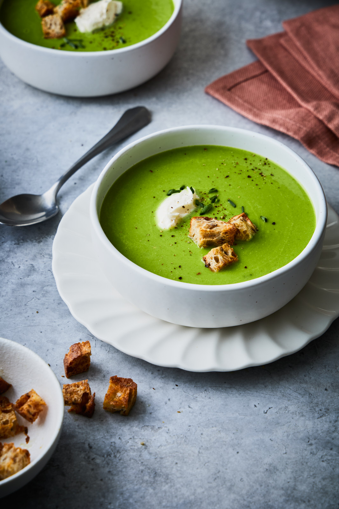
Potage Saint-Germain
Une soupe crémeuse de pois traditionnellement servie à Paris.
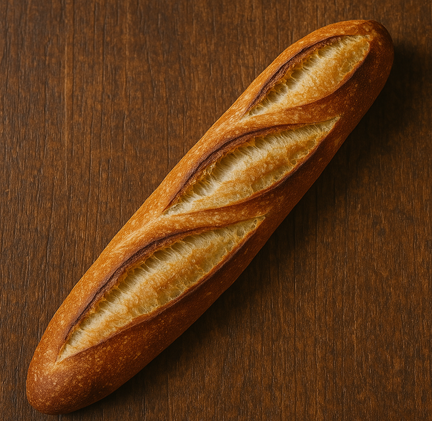
Baguette de Tradition
Une baguette parisienne classique avec un extérieur croustillant et un intérieur moelleux.
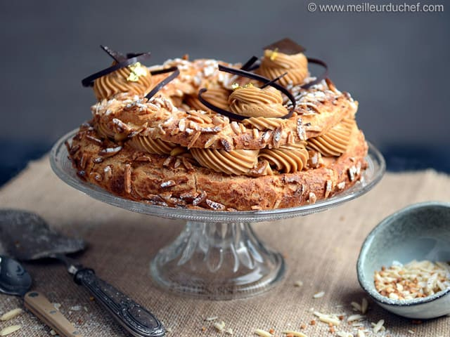
Paris-Brest
Une pâtisserie en forme de choux remplie de crème au praliné, nommée d'après la course Paris-Brest.
Région Nord-Ouest et “Océan Indien” (Incluant La Réunion et Mayotte)
Un mélange de plats côtiers et riches en produits laitiers avec des saveurs vibrantes et épicées des îles de l'océan Indien.
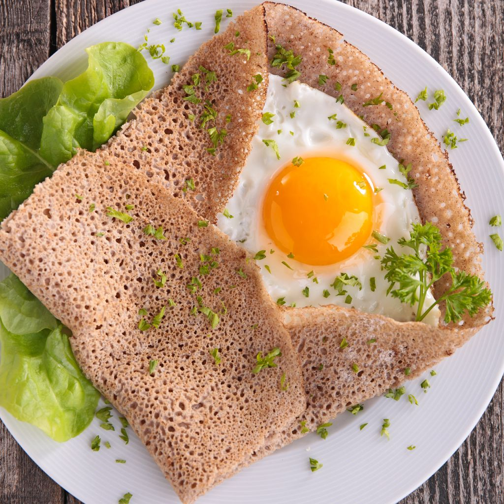
Galettes Bretonnes
Des crêpes salées fines à base de farine de sarrasin, typiques de Bretagne.
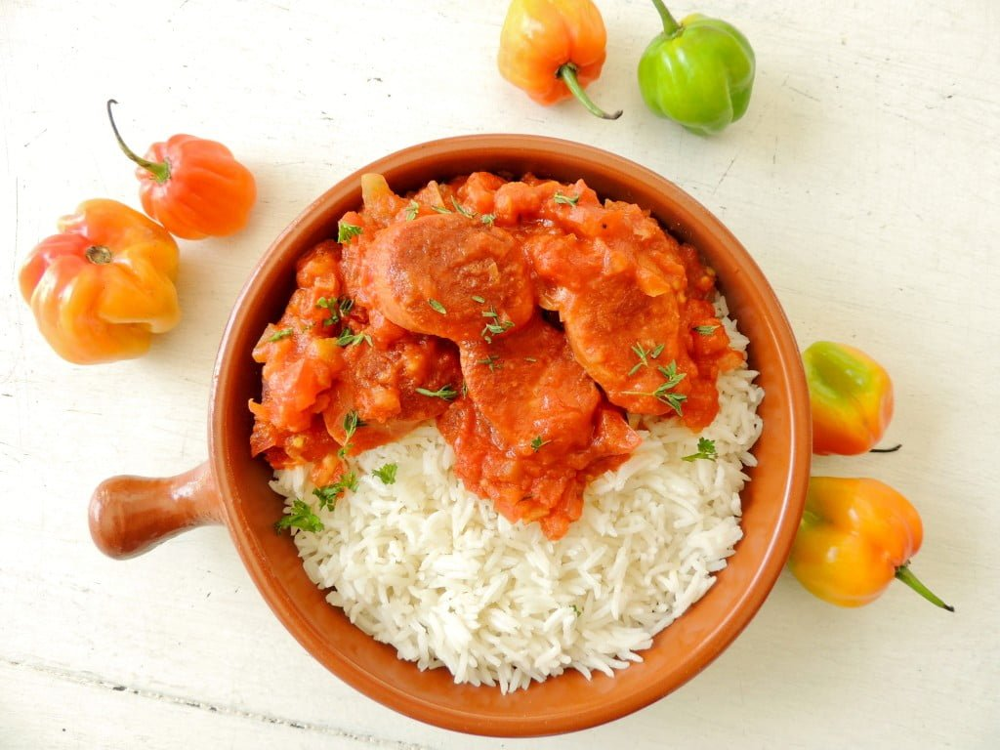
Cari de Poulet
Un curry épicé de poulet avec une touche créole de La Réunion.
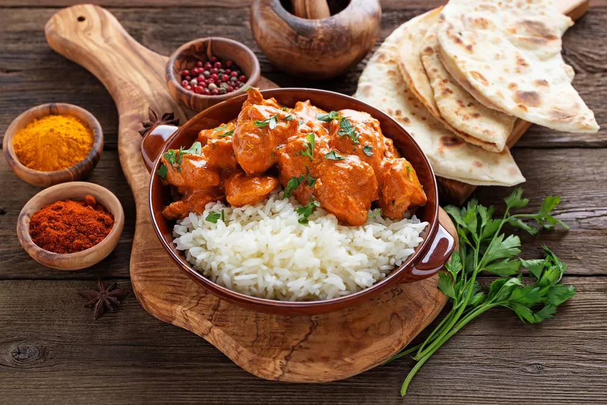
Rougail Saucisse
Un ragoût de saucisses avec des tomates et des épices, populaire à Mayotte et La Réunion.
Région Nord-Est (Normandie, Pays de la Loire)
Célèbre pour ses produits laitiers riches, ses pommes et ses fruits de mer frais.
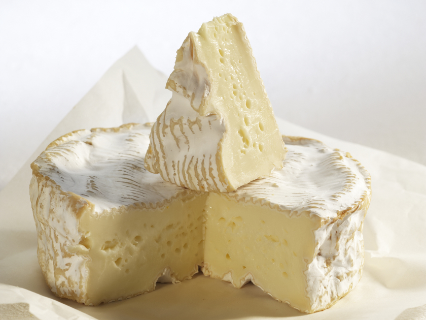
Camembert de Normandie
Un fromage crémeux au lait de vache avec une croûte blanche, originaire de Normandie.
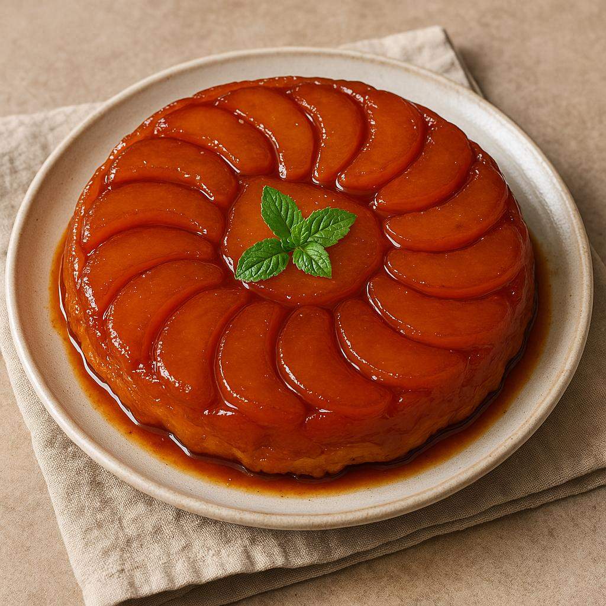
Tarte Tatin
Une tarte aux pommes caramélisées cuite à l'envers, une délicatesse sucrée de la région de la Loire.
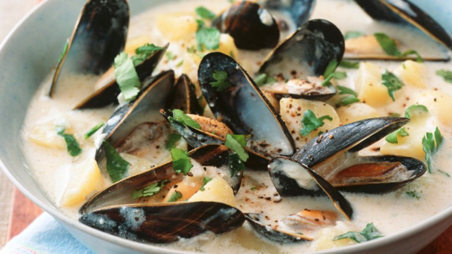
Moules à la crème
Des moules cuites dans une sauce crémeuse au vin blanc, un délice de fruits de mer de Normandie.
Région Sud-Est (Corse et Provence-Alpes-Côte d’Azur)
Une région méditerranéenne avec des saveurs rustiques d'île et une grande utilisation de l'huile d'olive dans les plats.

Ratatouille
Un ragoût de légumes coloré, composé de courgettes, aubergines et tomates, typique de la Provence.
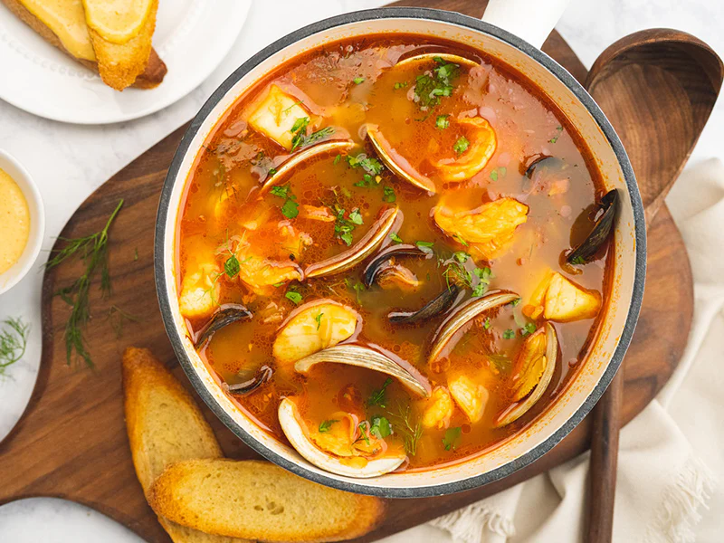
Bouillabaisse
Un ragoût de poisson traditionnel de Marseille, cuit avec des herbes, du safran et de l'ail.
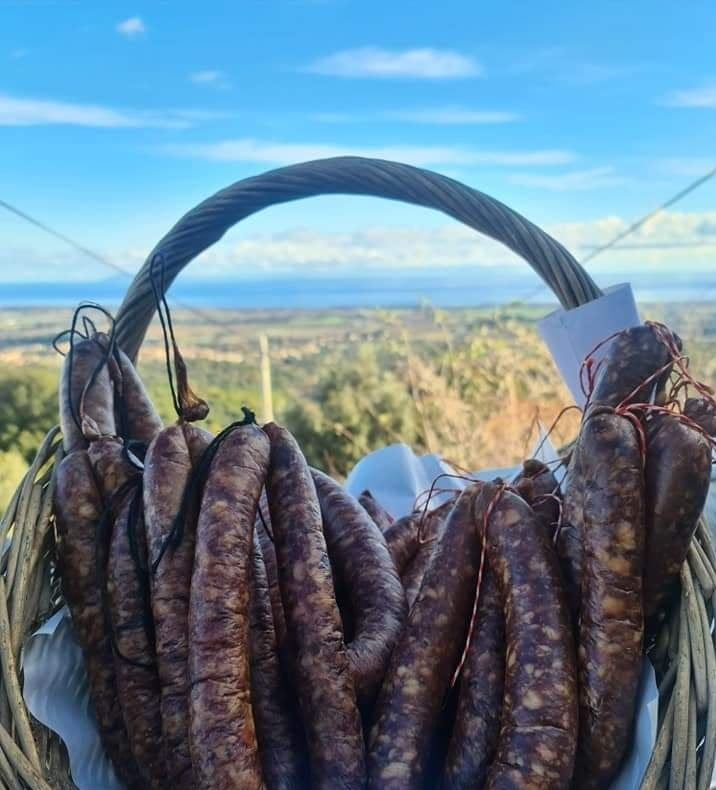
Rougail Saucisse
Une saucisse corse fumée à base de foie et de viande de porc, une spécialité régionale.
Région Sud-Ouest et “Océan Atlantique”
Connue pour ses plats à base de canard dans le sud-ouest et pour sa cuisine créole tropicale dans les territoires d'outre-mer.
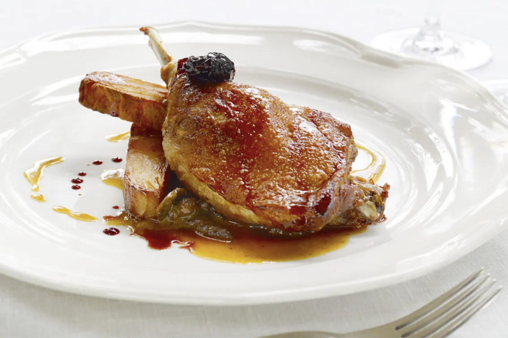
Confit de Canard
Cuisse de canard cuite lentement dans sa propre graisse, tendre et savoureuse, un plat classique du sud-ouest de la France.
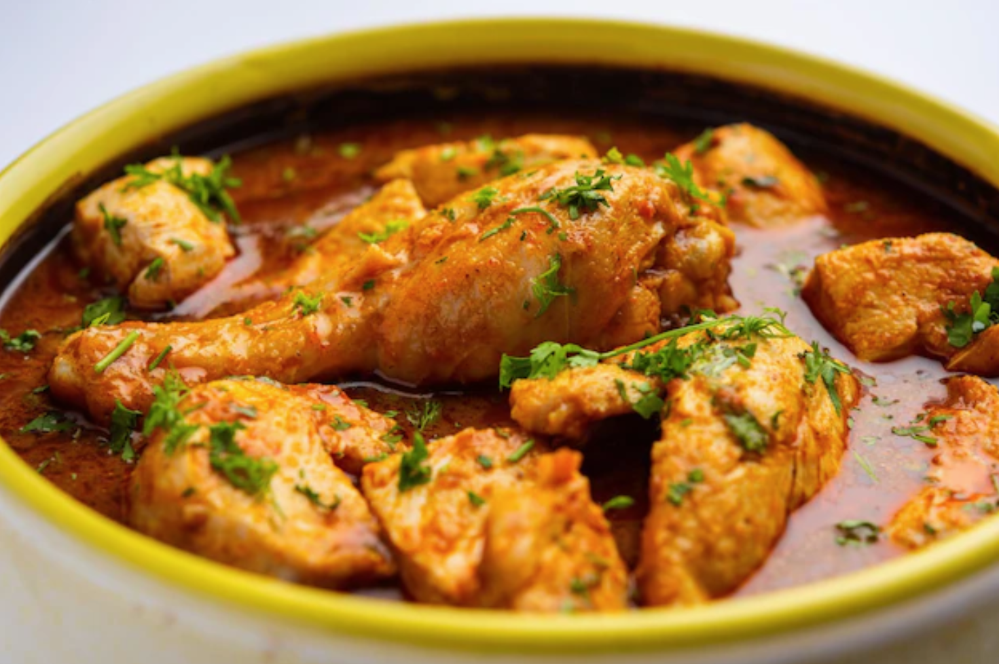
Colombo de Poulet
Un curry épicé de poulet, une spécialité caribéenne avec des épices Colombo, originaire de la Martinique et de la Guadeloupe.
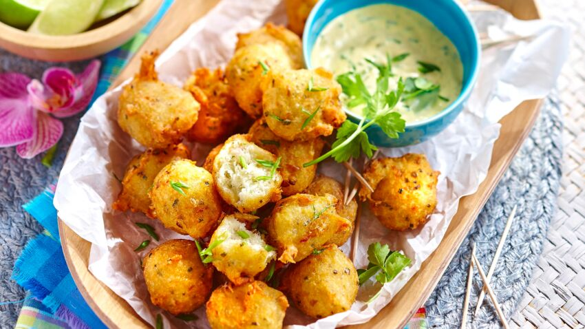
Accras de Morue
Des beignets de morue frits, populaires dans les Antilles françaises (Guadeloupe/Martinique).